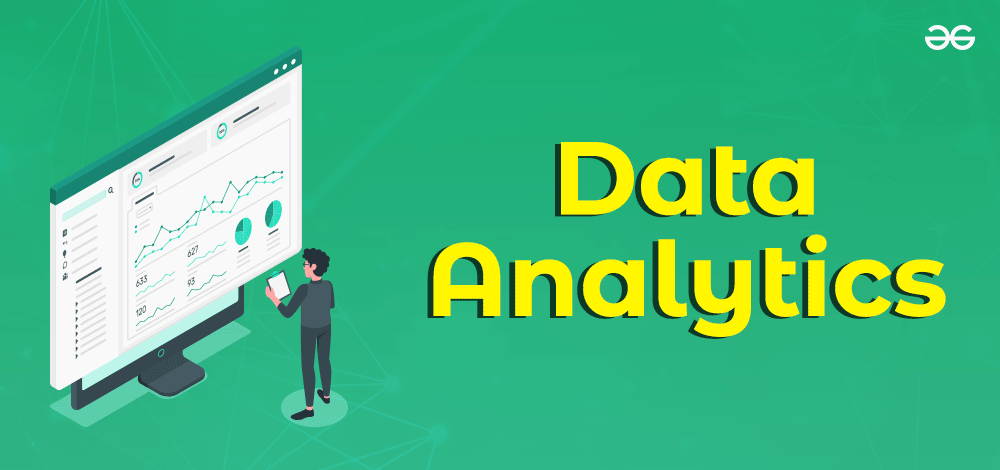

In this project for Codebasics Challenge 12, I used Power BI to analyze a dataset of Electric Vehicle (EV) sales in India. The goal was to create interactive visualizations that provide insights into the growth, distribution, and trends of EV sales across various regions.
.jpeg)
In this project, I leveraged Power BI to analyze and visualize sales data stored in an SQL database. The project involved importing data from SQL into Power BI to create dynamic dashboards and reports, providing critical insights into sales performance, trends, and opportunities for growth.


In this project we Imported Data From Excel spreadsheets to Create dynamic,Interactive Dashboards in powerbi

In this project we clean layoffs data in SQL.

.Gained expertise in data analysis and visualization techniques
and Worked with tools like Power BI, Excel to build interactive dashboards and visual reports
and Applied data-driven insights to solve real-world business challenges..
.jpeg)
Mastered data modeling, reporting, and dashboard creation using Power BI and
Applied advanced data visualization techniques to present complex data insights and
Gained hands-on experience with DAX (Data Analysis Expressions) for custom reporting.
.jpeg)
Developed skills in creating insightful and effective data visualizations and
Used tools like Excel, Power BI to transform raw data into meaningful visual reports
Learned techniques for presenting complex data in an accessible format for business decision-making.